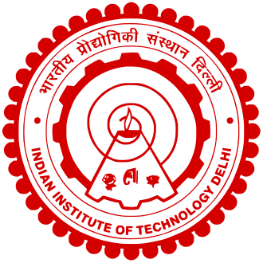
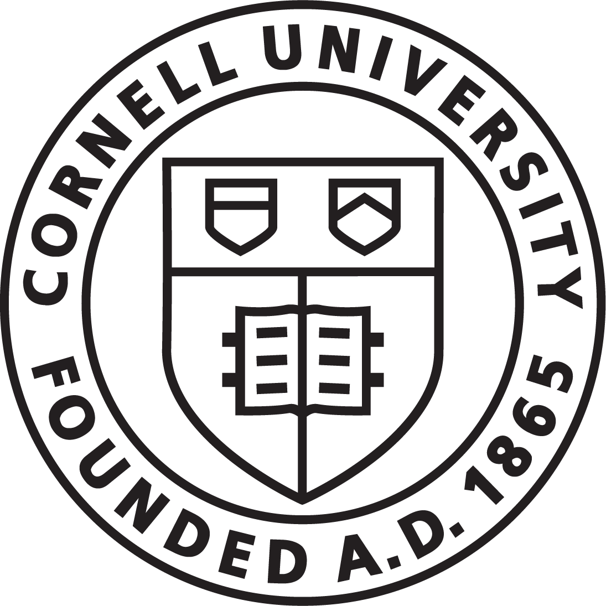

About
I am a first-year PhD student in the Computer Science department at Cornell University.Before joining Cornell, I was a Research Fellow at Microsoft Research India where I worked with Akash Lal, Pantazis Deligiannis, and Aseem Rastogi on tools for programming languages and using large language models for program verification.
I graduated with a Bachelors and Masters in Computer Science and Engineering from IIT Delhi in 2022. At IIT Delhi, I was advised by Prof. Sorav Bansal. During this time, I also did an internship with Prof. Junfeng Yang at Columbia University.
For more details, check my CV or send me an email.
Publications
Industrial-Strength Controlled Concurrency Testing for C# programs with Coyote
Pantazis Deligiannis, , Fahad Nayyar, Chris Lovett and Akash Lal
EASST Best Software Science Paper
29th International Conference on Tools and Algorithms for the Construction and Analysis of Systems (TACAS 2023)
UPGRADVISOR: Early Adopting Dependency Updates Using Hybrid Program Analysis and Hardware Tracing
Yaniv David, Xudong Sun, Raphael J. Sofaer, , Junfeng Yang, Zhiqiang Zuo, Guoqing Harry Xu, Jason Nieh and Ronghui Gu
16th USENIX Symposium on Operating Systems Design and Implementation (OSDI 2022)
Sound Translation Validation for LLVM
M.Tech Thesis, Indian Institute of Technology, Delhi
March 2022

